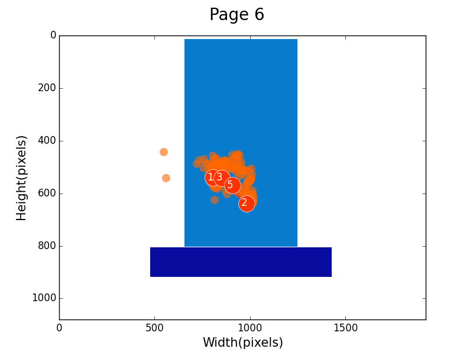
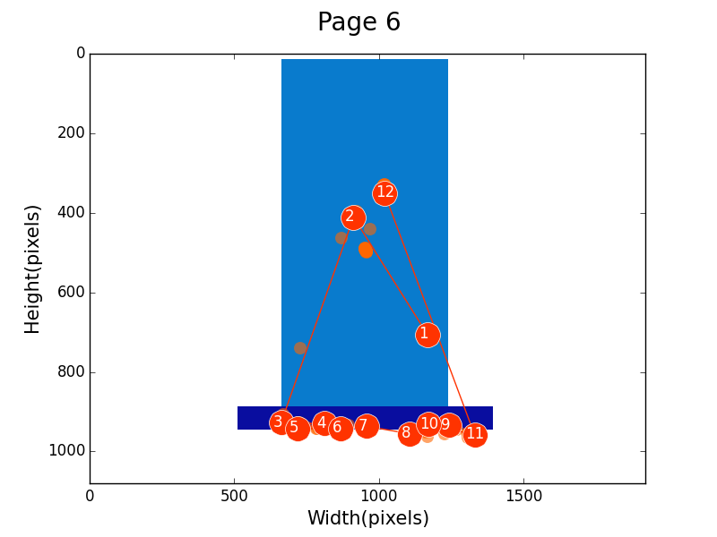
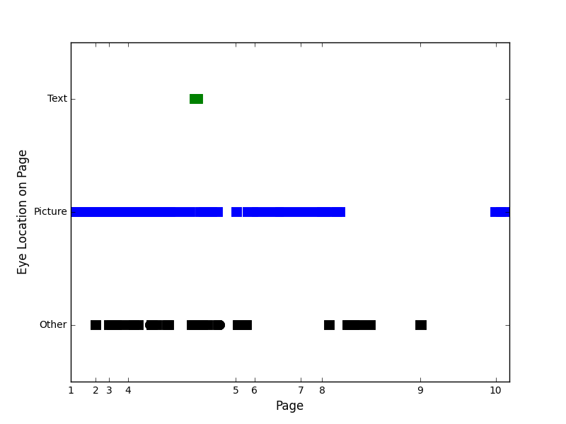
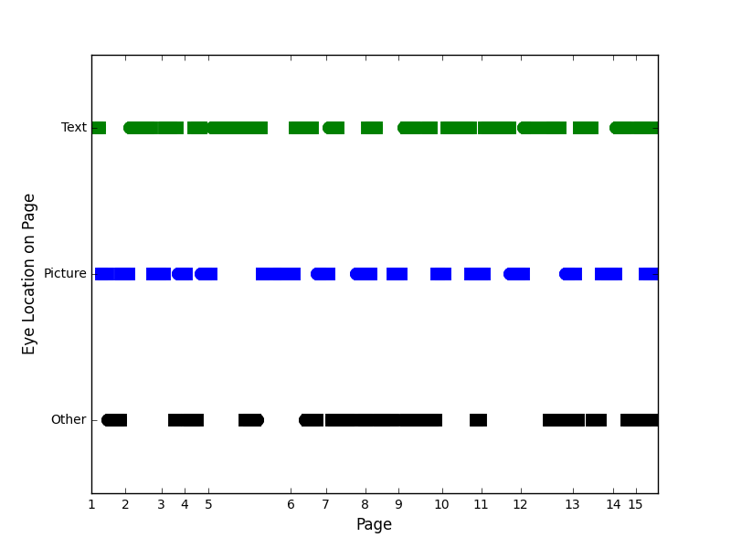

Graphs and Data Analysis
Picture "Page" Graphs


What is this?
This is a graph that represents the data points across the user's screen taken from the Tobii PCEye Go as they were reading a given page in their Tar Heel Reader book. There would be a graph like this for every page, and the two boxes represent the area where the picture is (the light blue) and the area where the text is (the dark blue).
The data points are represented by a series of orange circles. The lighter transparent circles represent gaze points (more fleeting looks) while the numbered circles represent fixation points (longer, more focused looks). The numbering of these points corresponds to the order in which they appeared.
What do we hope to conclude from this?
There are two graphs above for a purpose: the one on the left is a recording of the gaze of a small child. Notice that she has fewer fixations than the one on the right, and they are all centered on the picture. In a generalization, we might surmise that this sort of behavior corresponds to a child who does not know how to read; given that they do not fixate on the text box whatsoever.
In comparison, evaluate the graph on the right I took of myself reading a book. Notice that there are fewer errant gazes by the lack of lighter orange spots and more fixations. Also notice that these fixations are greater in the text area, and have a certain directionality to them given that the numbers increase from left to right. We might gather that this person is reading; given these facts.
The hope is to study girls with Rett Syndrome who do not know how to read, and over the course of a specified period of time where they are being taught, see if we cannot notice a trend towards data that supports the conclusion that they are in fact learning to read by increased attention to the text box rather than the picture.
Line Graphs


What is this?
This is a line graph correlating eye location points from the Tobii PCEye Go with time; represented by what page the user was on at that given point in time. It represents that at a given point during the whole reading of the book... where was the user looking? In the picture area (blue), the text area (green), or neither (black)?What do we hope to conclude from this?
Once again, we have the reading from the same child as above, but this is a graph representing eye trends throughout the entire book. Similarly, on the right is my own data while reading a book. Notice how the child spends little to no time in the text area by lack of a green line, while the reading of the adult shows above equal time spent in each area.
This gives us a better idea of the general trends of attention given throughout the entire book. It also gives knowledge about one other things that is important... notice that occasionally for the child, there are gaps in the lines where there is no green, blue, or green line. This correlates to the Tobii PCEye Go recieving no data for an extended period of time. What does this mean? The child was not paying attention to the screen at all! This in itself can show us how engaged the user was with the reading in an even more simplified way.